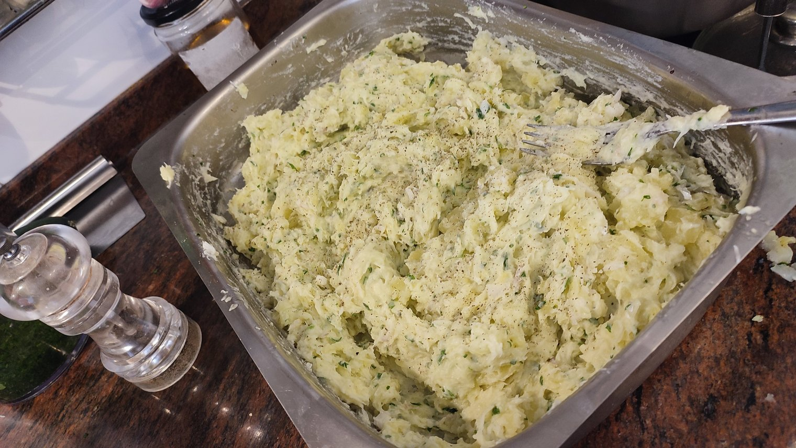

Brandade de morue
Ingrédients
- 1 kg de pommes de terre
- 625 g de morue
- 0.5 tasse de lait
- 0.5 tasse d'eau
- 2 feuilles de laurier
- 2 gousses d'ail
- 1 jaune d'oeuf
- huile d'olive
- 1 bouquet de persil
- poivre

La version de Tomás de ce plat nîmois.
Préparation
Étape 1
Cuire 1 kg de pommes de terre à l’eau.
Étape 2
Pocher 625 g de morue dans 0.5 tasse de lait et 0.5 tasse d'eau avec 2 feuilles de laurier : couvrir, chauffer et arrêter le feu dès que ça commence à bouillir. La morue doit être blanc nacré.
Étape 3
Écraser et dégermer 2 gousses d'ail, puis les hacher finement. Dans un bol, ajouter 1 jaune d'oeuf et piler, en ajoutant de l’huile d'olive petit à petit, pour monter un aïoli.
Étape 4
Écraser les pommes de terre à la fourchette avec un filet d’huile d’olive, plus ou moins en purée selon les goûts.
Étape 5
Émietter la morue sur les pommes de terre et mélanger à la fourchette. Incorporer l’aïoli, 1 bouquet de persil haché, un filet d’huile et du poivre.

Étape 6
Enfourner à 180ºC (th. 6) pendant 20 à 25min.
Conseils
- Si la morue est salée, la dessaler à l’avance dans de l’eau froide.